eQTL Analysis, Fine-Mapping, and Heritability Enrichment
BIOS 25328 · Lecture 8
2026-04-15
Learning Objectives
In this lecture we first cover LD score regression (material from L6 that deserves more time), then quantify where heritability lives in the genome, and finally use eQTLs as functional annotations that help elucidate the mechanisms underlying GWAS loci.
- Explain how LD score regression distinguishes true polygenicity from confounding
- Estimate heritability and genetic correlation from GWAS summary statistics using LDSC
- Use stratified LD score regression to partition heritability by functional annotation
- Define eQTLs and sQTLs and explain the GTEx study design
- Use eQTLs as functional annotations to elucidate mechanisms underlying GWAS loci
- Understand how fine-mapping narrows associations to likely causal variants
LD Score Regression
These slides were introduced in L6 (Mixed Effects Models) but were not covered in sufficient depth. We revisit them here before extending to stratified LDSC.
Inflation of Test Statistics: Two Causes
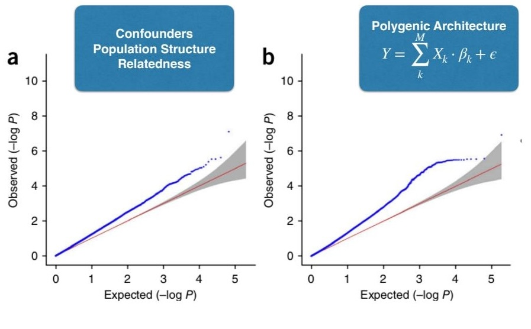
Inflation of summary statistics can be due to:
- Confounders — population structure, relatedness, etc.
- True polygenicity — most variants have a causal effect or are in LD with causal variants
Bulik-Sullivan et al. Nature Genetics, 2015.
Genomic control cannot distinguish between true polygenicity and confounding
LD and Chi² Statistics
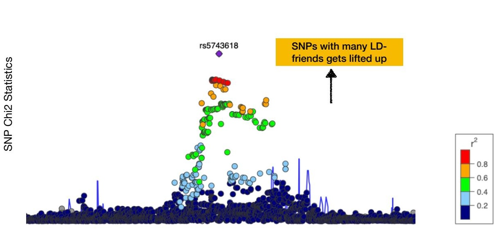
LD Score: Measure of LD with Neighboring Variants
\[l_j = \sum_k r_{j,k}^2\]
- \(l_j\) = LD score of variant \(j\)
- Measures amount of genetic variation tagged by variant \(j\)
- SNPs in high-LD regions have high LD scores
Polygenic Additive Model
\[Y = \sum_{k}^{M} X_k \cdot \beta_k + \epsilon \qquad \beta \sim N(0, \sigma_{\beta}^2)\]
- All \(M\) common SNPs contribute to the phenotype
- Effect sizes are drawn independently from a normal distribution
- This is the main model for common disease genetics
LD Score Regression Distinguishes Confounding from Polygenicity
\[E[\chi^2 \mid l_j] = \frac{Nh^2}{M} l_j + Na + 1\]
- Slope (\(Nh^2/M\)): driven by true polygenicity → estimates heritability
- Intercept (\(Na + 1\)): driven by confounding → estimates population stratification / relatedness bias
LD Score Regression — Parameters
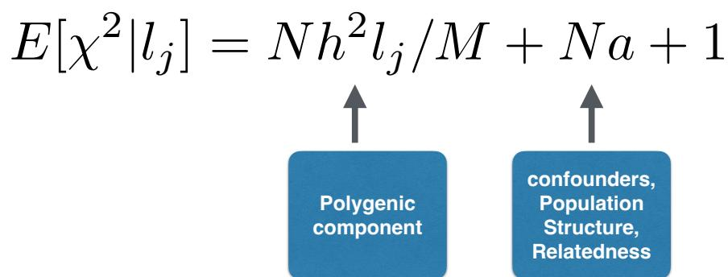
| Parameter | Meaning |
|---|---|
| \(N\) | sample size |
| \(M\) | number of SNPs |
| \(h^2/M\) | variance explained per SNP |
| \(a\) | confounding: cryptic relatedness + population stratification |
| \(l_j = \sum_k r^2_{jk}\) | amount of genetic variation tagged by SNP \(j\) |
LDSC: Slope vs. Intercept
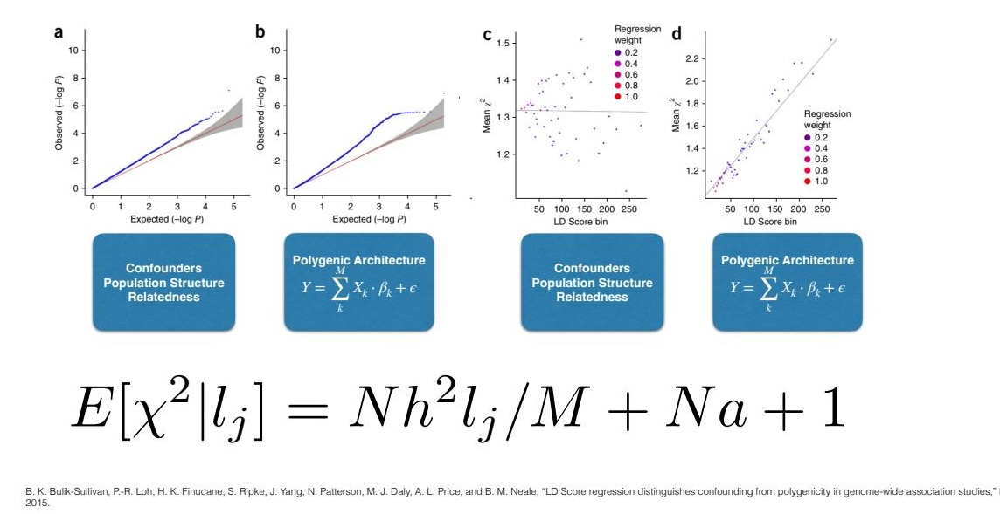
LD Score Regression — Schizophrenia

Genomic Control vs. LD Score Regression
| Trait | \(\lambda_{GC}\) (raw) | \(\lambda_{GC}\) (corrected) | LDSC intercept |
|---|---|---|---|
| Ulcerative colitis | 1.174 | 1.128 | 1.079 (0.010) |
| Crohn’s disease | 1.185 | 1.122 | 1.059 (0.008) |
| Schizophrenia | 1.613 | 1.484 | 1.070 (0.010) |
| ADHD | 1.033 | 1.033 | 1.008 (0.006) |
| Bipolar disorder | 1.154 | 1.135 | 1.030 (0.008) |
| PGC cross-disorder | 1.205 | 1.187 | 1.018 (0.008) |
| Major depression | 1.063 | 1.063 | 1.009 (0.006) |
| Rheumatoid arthritis | 1.063 | 1.033 | 0.980 (0.007) |
| Coronary artery disease | 1.125 | 1.096 | 1.033 (0.008) |
| Type 2 diabetes | 1.116 | 1.097 | 1.025 (0.008) |
LD Score Values on Chromosome 22

Calculated by Yanyu Liang using GTEx V8 reference variant set
Genetic Correlation Between Traits
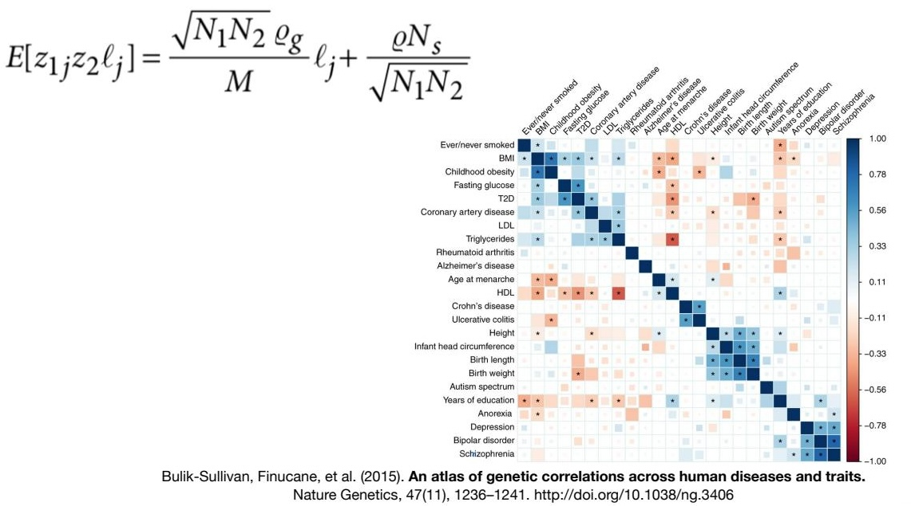
With the same assumptions, LD score regression can estimate genetic correlation between traits
\[E[z_{1j} z_{2j} \mid l_j] = \frac{\sqrt{N_1 N_2}}{M} \varrho_g \cdot l_j + \frac{\varrho N_s}{\sqrt{N_1 N_2}}\]
LD Score Regression Estimates h² and Genetic Correlation
\[E[\chi^2 \mid l_j] = \frac{Nh^2}{M} l_j + Na + 1 \quad \leftarrow \text{ heritability + confounders}\]
\[E[z_{1j} z_{2j} \mid l_j] = \frac{\sqrt{N_1 N_2}}{M} \varrho_g \cdot l_j + \frac{\varrho N_s}{\sqrt{N_1 N_2}} \quad \leftarrow \text{ genetic correlation}\]
By partitioning LD scores into functional categories, we can also partition heritability by functional annotation.
Genetic Correlation Among Cancers
| Breast | Colorectal | Lung | Ovarian | Pancreatic | Prostate | |
|---|---|---|---|---|---|---|
| Breast | 1 | 0.22 (0.09) | 0.27 (0.11) | 0.26 (0.20) | 0.17 (0.19) | 0.06 (0.09) |
| Colorectal | — | 1 | 0.31 (0.10) | -0.08 (0.13) | 0.55 (0.19) | 0.09 (0.07) |
| Lung | — | — | 1 | -0.17 (0.17) | 0.32 (0.19) | 0.095 (0.08) |
| Ovarian | — | — | — | 1 | -0.40 (0.29) | 0.02 (0.14) |
| Pancreatic | — | — | — | — | 1 | -0.06 (0.14) |
| Prostate | — | — | — | — | — | 1 |
Genetic Correlation: Cancer and Other Diseases
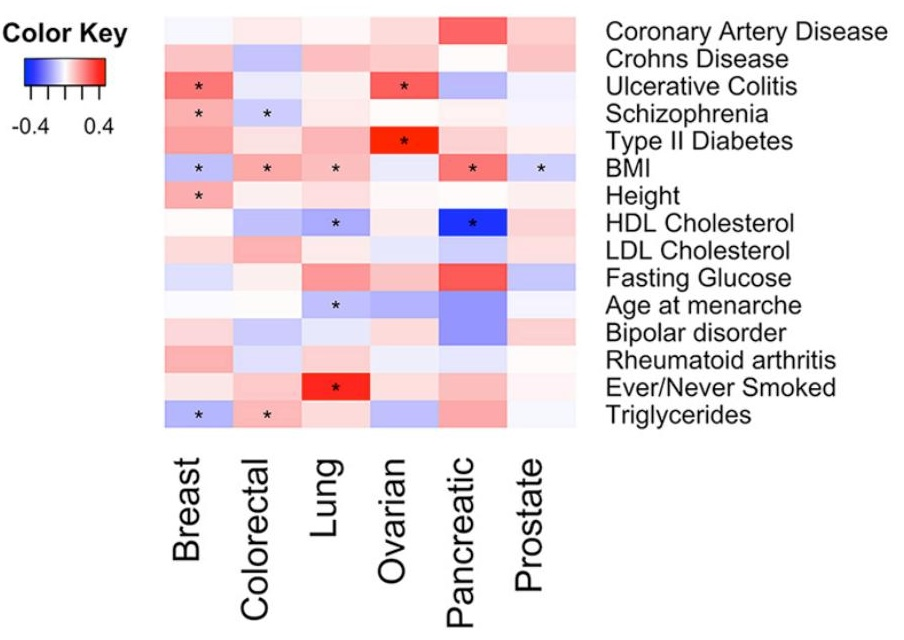
Caveat: Assortative Mating Confounds Genetic Correlation
Cross-trait assortative mating inflates genetic correlation estimates
Border et al. Cross-trait assortative mating is widespread and inflates genetic correlation estimates. Science, 2022.
Genetic Correlation Among Psychiatric Diseases

Brainstorm Consortium. Analysis of shared heritability in common disorders of the brain. Science, 2018.
Partitioning Heritability
Partitioning Heritability into Classes
\[Y = \sum_{k \in \text{class 1}} \beta_k X_k + \sum_{k \in \text{class 2}} \beta_k X_k + \epsilon\]
\[\text{Var}(Y) = \sigma^2_{\text{class1}} \cdot \text{GRM}_{\text{class1}} + \sigma^2_{\text{class2}} \cdot \text{GRM}_{\text{class2}} + \sigma^2_\epsilon\]
- GRM for each class built using only SNPs in that class
- Variance components estimated by REML
Partitioning Heritability by Chromosome
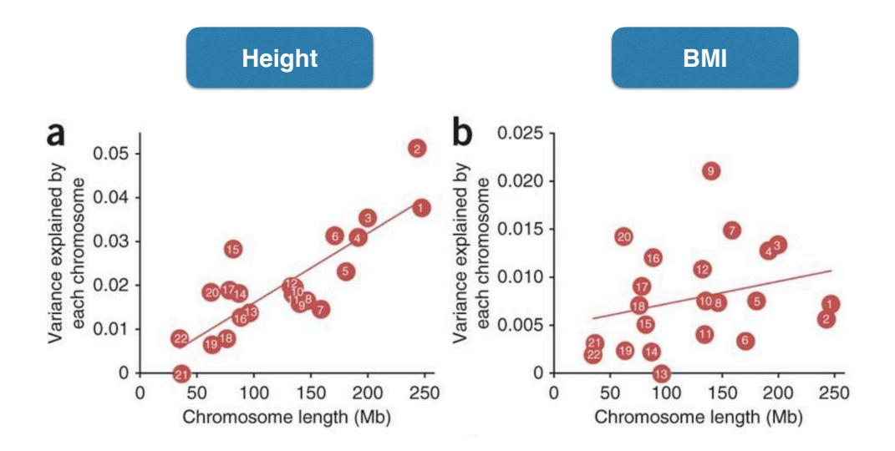
Yang et al. Genome partitioning of genetic variation for complex traits using common SNPs. Nature Genetics, 2011.
Partitioning Heritability by Chromosome
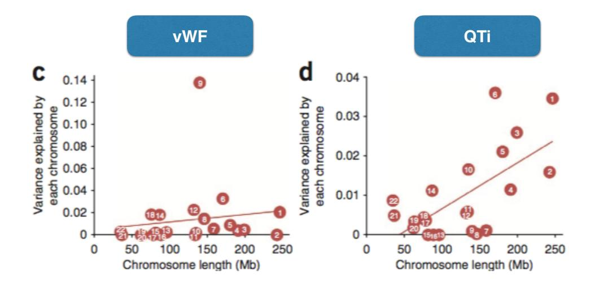
Yang et al. Nature Genetics, 2011.
Stratified LD Score Regression
\[E[\chi^2 \mid l_j] = \frac{N h^2 l_j}{M} + Na + 1\]
\[E\!\left[\chi_j^2\right] = N \sum_C \tau_C \,\ell(j,C) + Na + 1\]
- \(\ell(j,C)\): LD score of SNP \(j\) restricted to annotation category \(C\)
- \(\tau_C\): per-SNP heritability contribution from category \(C\)
- Enrichment = (fraction of heritability) / (fraction of SNPs)
How Do You Calculate χ² from GWAS Summary Statistics?
| CHR | SNP | A1 | BETA | STAT | P |
|---|---|---|---|---|---|
| 22 | rs11089128 | G | −3593 | −2.09 | 0.037 |
| 22 | rs7288972 | C | −3333 | −2.392 | 0.017 |
| 22 | rs11167319 | G | −229.6 | −0.154 | 0.878 |
\[\chi^2 = \text{STAT}^2\]
Most GWAS output files report a Z-score (or t-statistic) in the STAT column. Squaring it gives χ².
Stratified LD Score Regression — Enrichment
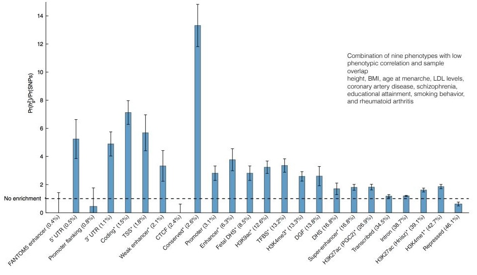
Finucane et al. Partitioning heritability by functional annotation using genome-wide association summary statistics. Nature Genetics, 2015.
Gene Expression Traits: Functional Annotation Enrichment
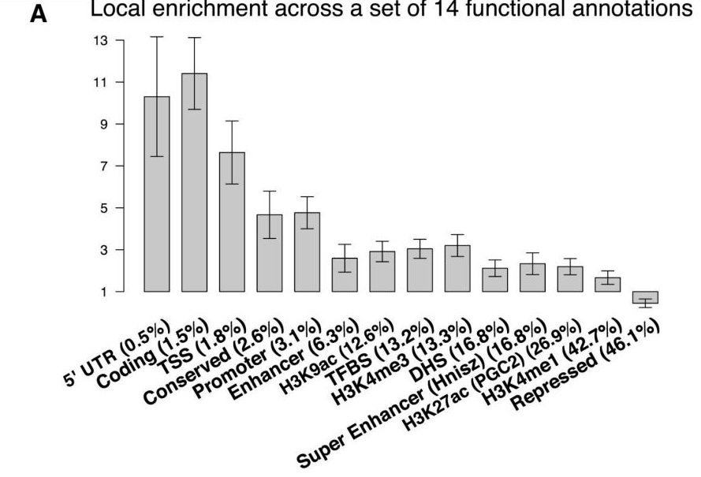
Enrichment of Tissue Types
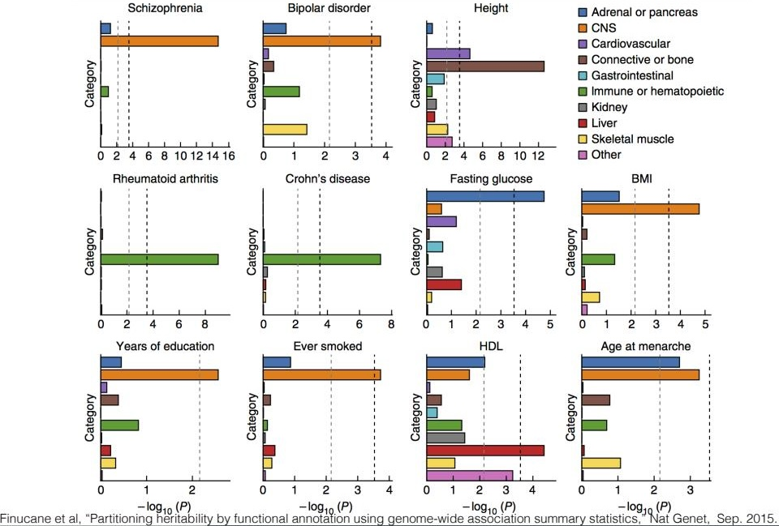
From GWAS to Mechanisms
GWAS Variants Are Mostly Non-Coding
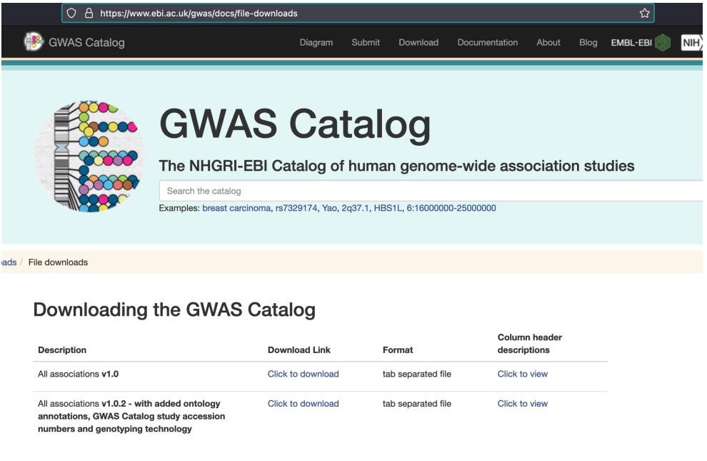
GWAS Catalog
Non-Coding Variants Act Through Gene Regulation
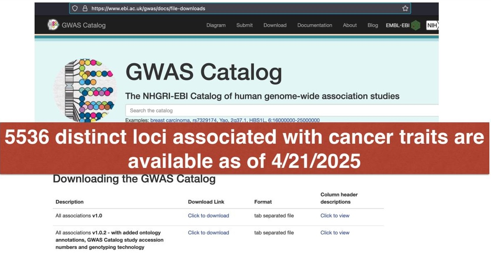
Altered Protein Levels Influence Disease Risk
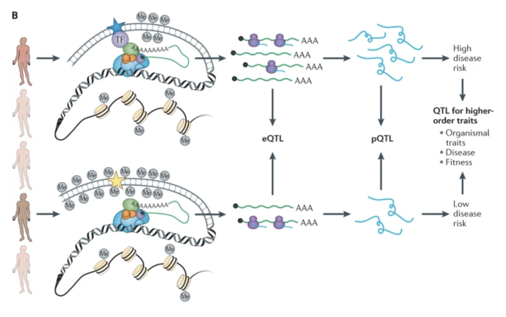
Albert & Kruglyak. The role of regulatory variation in complex traits and disease. Nature Reviews Genetics, 2015.
Total mRNA and Splicing Affect Complex Traits
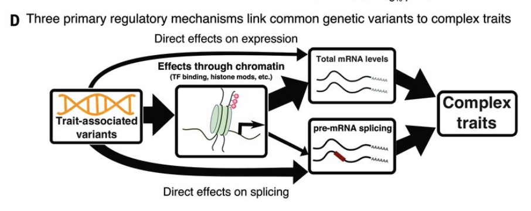
Li et al. RNA splicing is a primary link between genetic variation and disease. Science, 2016.
The GTEx Project
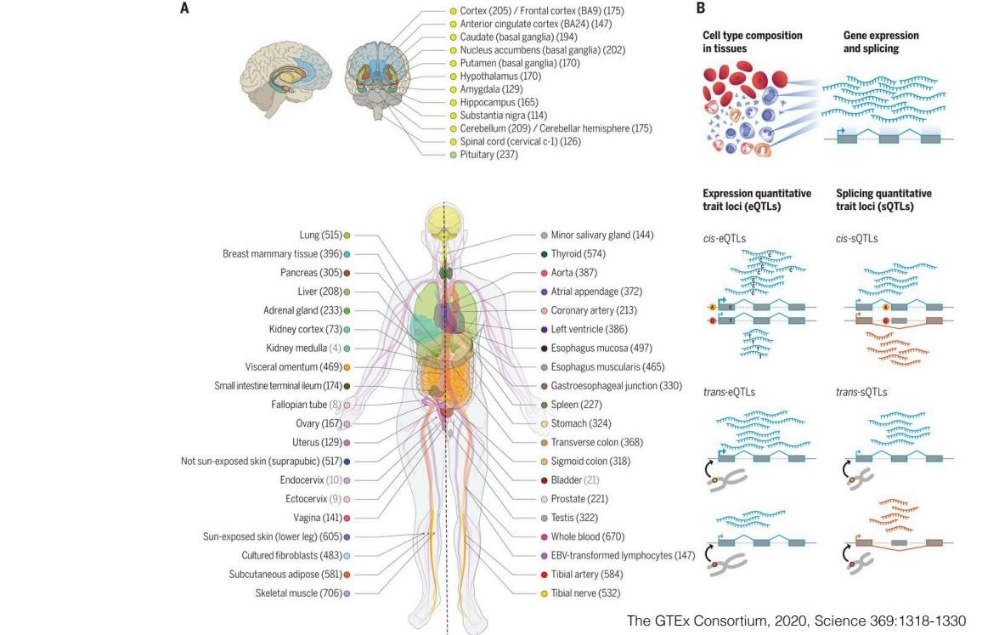
The GTEx Consortium. The GTEx Consortium atlas of genetic regulatory effects across human tissues. Science, 2020.
GTEx v8: Scale and Design
- Established 2010 to map genetic regulatory effects across human tissues
- 17,382 tissue samples from 838 donors across 54 tissues
- All samples: RNA-seq + 30x whole genome sequencing
- 49 tissues with 73–706 samples used for QTL mapping
Expression Quantitative Trait Loci (eQTLs)
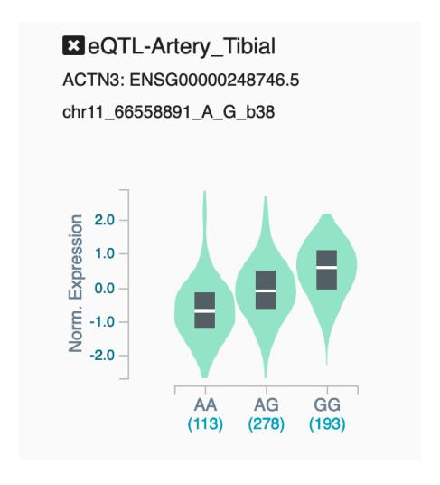
GTEx Portal — gtexportal.org
eGenes Scale with Sample Size
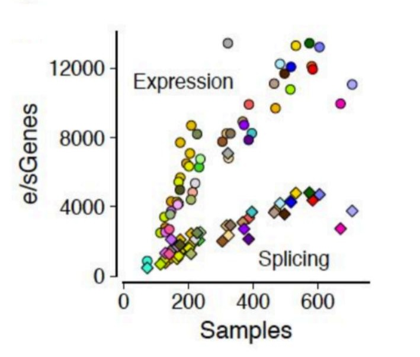
The GTEx Consortium. Science, 2020.
QTL Discovery Across Tissues
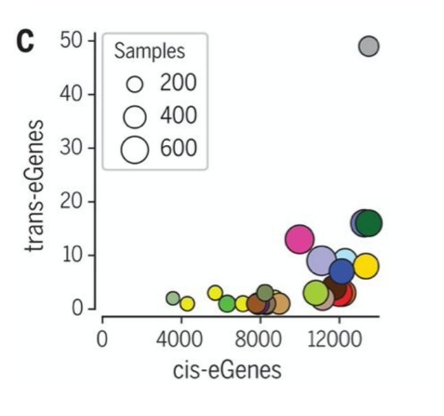
The GTEx Consortium. Science, 2020.
Regulatory Mechanisms of GWAS Loci
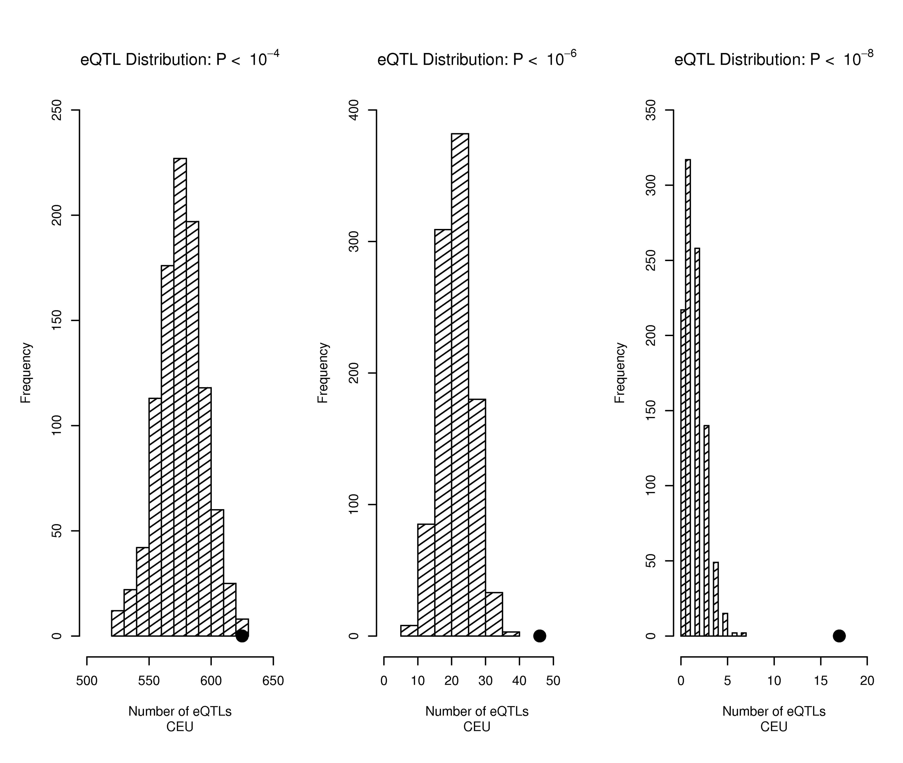
Trait-Associated SNPs Are More Likely to Be eQTLs: Annotation to Enhance Discovery from GWAS
Nicolae et al. Trait-Associated SNPs Are More Likely to Be eQTLs: Annotation to Enhance Discovery from GWAS. PLoS Genetics, 2010.
Functional Genomic Regions Are Enriched Among eQTLs and sQTLs
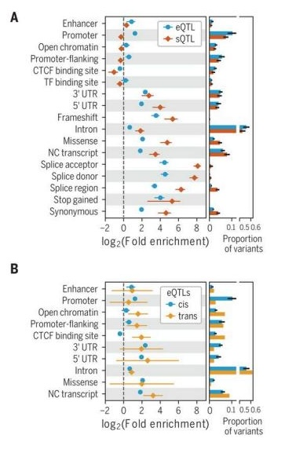
The GTEx Consortium. Science, 2020.
Fine-Mapping
Fine-Mapping: The Problem
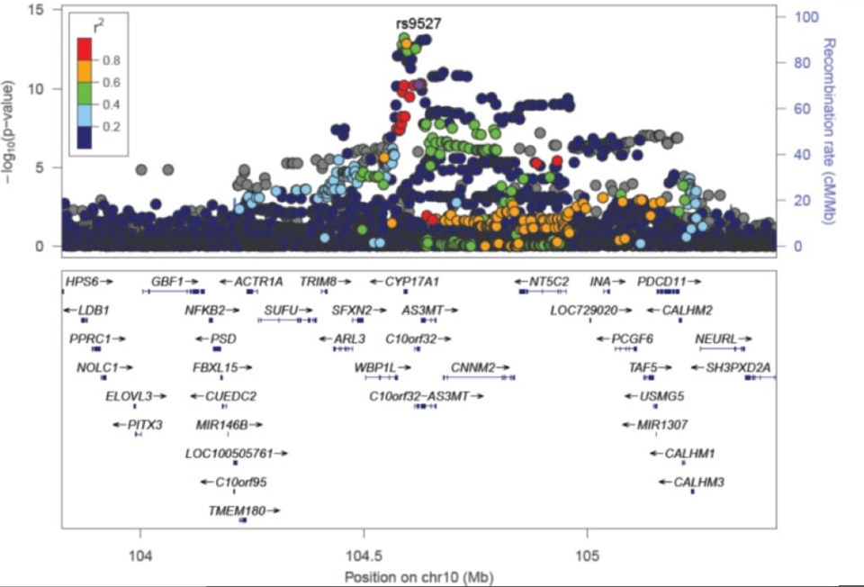
Fine-Mapping: The Goal
- Fine-mapping: identify the causal variant underlying an observed association
- Many variants in LD tag the true signal — the causal one is not obvious
- Requires results for all variants in the locus (imputation or dense genotyping)
- Build credible sets: sets of SNPs 95% likely to contain the causal variant
- Assign Posterior Inclusion Probability (PIP) to each variant
Fine-Mapping: SuSiE Example
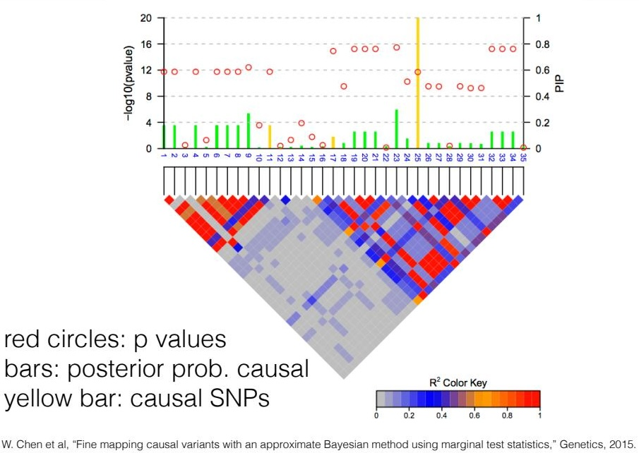
Fine-Mapping: IBSS Algorithm
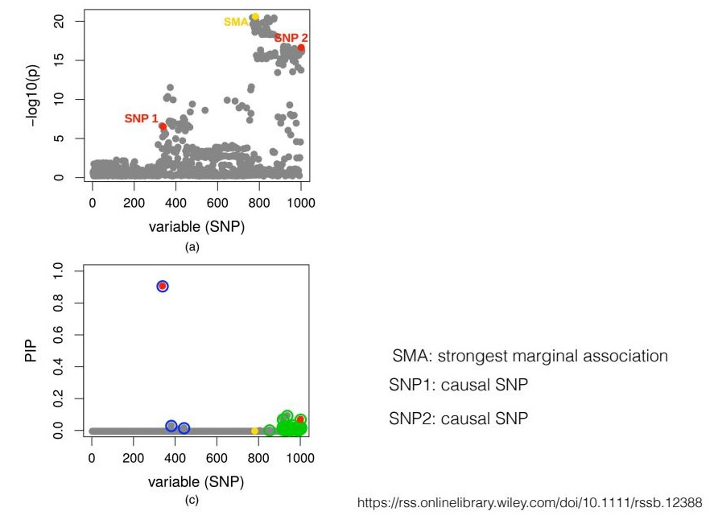
Wang et al. A simple new approach to variable selection in regression, with application to genetic fine mapping. JRSS-B, 2020.
Fine-Mapping Methods
- CAVIAR (Hormozdiari et al., Bioinformatics 2015)
- FINEMAP (Benner et al., Bioinformatics 2016)
- fastPAINTOR (Kichaev et al., Bioinformatics 2016)
- DAP-G (Wen et al., AJHG 2016)
- SuSiE (Wang et al., JRSS-B 2020) — current standard
Fine-Mapping of cis-eQTLs in GTEx
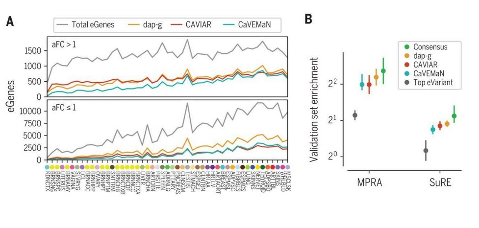
The GTEx Consortium. Science, 2020.
ENCODE
ENCODE: Encyclopedia of DNA Elements
- Pilot phase launched in 2003
- Goal: catalog all functional elements in the human genome
- Elements acting at the protein and RNA level
- Regulatory elements controlling when and where genes are active
- Characterizes functional elements of the genome and epigenome
ENCODE Regulatory Annotations
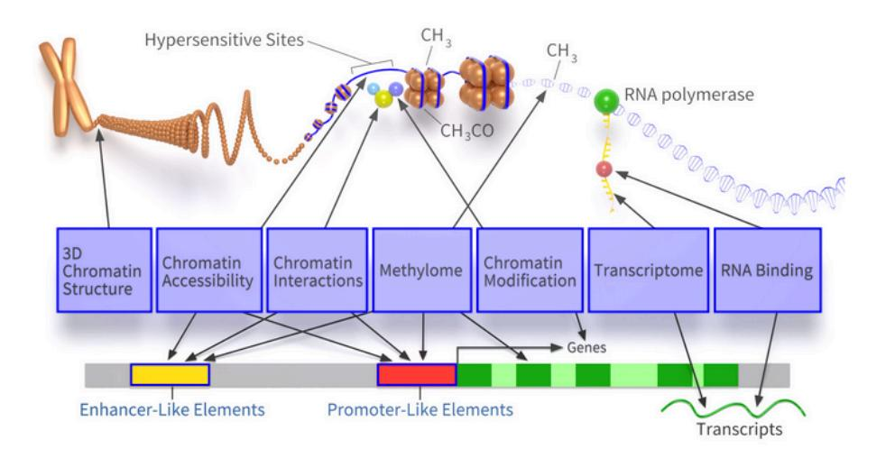